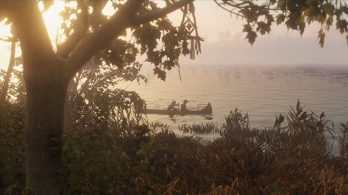
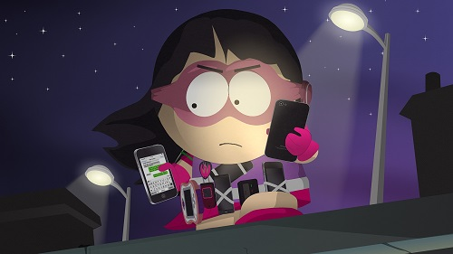
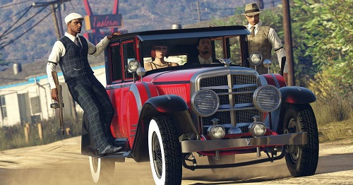

¿La preventa de juegos es de provecho para la industria?

La condición del medio como negocio es difícil, porque por más que nos vayamos por una corriente estrictamente comercial, hay aspectos que obligan a los juegos a darle la razones a las técnicas viles como las microtransacciones o los DLC inútiles. Pero aquí el tema es la preventa, ejercicio de opinión que nos ha provocado la siguiente pregunta: ¿La preventa de juegos es de provecho para la industria?
Todo depende de una mera cuestión de perspectiva. Los videojuegos son un insumo muy valioso para el medio y todas las formas posibles para hacer dinero de él hacen bien a la industria por un mero tema de activos, pasivos y negocio. Entre más ingresos consiga apelmazar los videojuegos, más atractivos serán para el mundo y por lo tanto, existirá más infraestructura par que sigan vendiéndose. Sin embargo, las cosas no son tan fáciles como suena: el ser optimistas y decir que entre más se gaste como consumidores, las casas publicadoras se volverán más nobles y no solo los juegos serán más baratos, sino que cosas como los DLC sin chiste desaparecerán, pero en general, muchos medios, incluso cualquier negocio que se intenta formar, en su mayoría, es influenciado por la avaricia.
Otra cosa que reina en el medio, sólo que ahora por parte de los consumidores, es el consumo exacerbado, el consumo ansioso, el hype sin razón. La preventa de videojuegos realmente no significa el apoyar al medio, a la publicadora, o al estudio, muchas veces la preventa solo sirve para que puedas presumir que ese juego que gusta, que lo conseguiste día uno antes que nadie.

Pero que esas ansias de consumo no te engañen o cieguen tu buen raciocinio. Precomprar un juego es comprar aire, es pagar por algo de lo que no se tiene idea fuera de lo que podemos leer o ver en los sitios de medios especializados.
Creo que podríamos mantenernos en una postura de mal necesario. Incluso nos atreveremos a decir que ni siquiera es un mal, ya que la forma en cómo esto se queda totalmente inválido es con el poder de nuestras carteras. El medio verá que no se venden las preventas y buscará la forma de sacar el dinero que necesita para mantenerse de pie, tanto los trabajos de los asalariados miembros del equipo de desarrollo que tienen que llevar comida a sus mesas, así como mantener los yates o autos del año de los grandes ejecutivos.
Y volvemos a la pregunta, ¿la preventa de juegos es de provecho para la industria?, si se mide solo como negocio noble, fuera de toda expresión artística y crítica de las obras, la preventa puede ser de provecho para todos los que busquen un bien para el juego y todos sus responsables. Imagina que con todo ese dinero extra registrado se puede tener presupuesto para poder ofrecer más contenido como forma de agradecimiento, así como poder pagar pendiente importantes que se quedaron bailando en el desarrollo.

Pero por más que este escenario suene bien, es muy poco probable que estos actos desinteresados se puedan dar en la práctica, por lo que lo único que nos toca es comprar estas juegos sin salir para enriquecer bolsillos, presunción de consumismo, o ansias por satisfacer el hype... y desafortunadamente con estas resoluciones ahora sí que la preventa no estaría siendo de provecho para el medio. Ya está en cada uno saber si caemos ante el consumismo negligente o no.